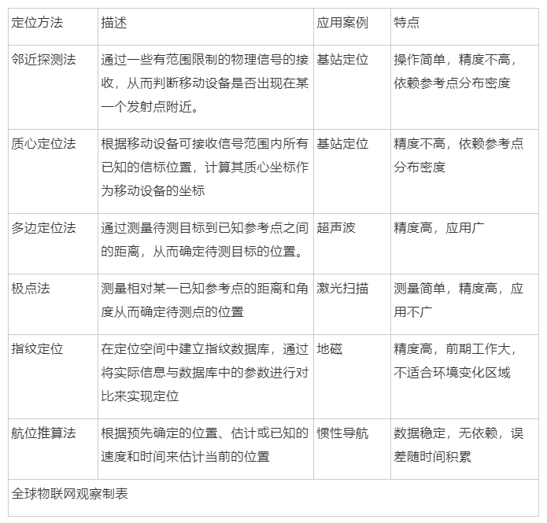
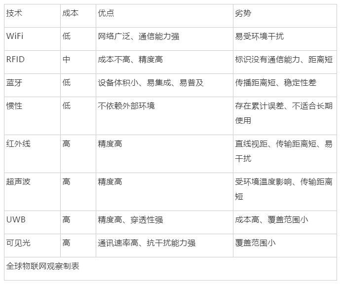

1

起源
人类为了不让自己迷失在茫茫大自然中，先后发明罗盘、指南针等工具，卫星定位的问世，解决了“我在哪里”的问题。在高度城市化的今天，室内空间越来越庞大复杂。人类战胜了大自然，却在自己构筑的钢筋水泥中迷了路。

在医院，即使有楼层分布图以及引导标志，但看病的大部分时间仍然会浪费在寻找科室上。在停车场，找不着停车位而四处乱转的人也比比皆是。
在越来越迫切的需求下，近年室内定位引起了高度的关注。
室内定位顾名思义就是在室内环境中实现定位。其意义，诺基亚在多年前阐述他们为什么要做室内定位时，把问题说得很明白了。

数据来源：诺基亚
卫星无法在室内定位，人们大部分的时间又在室内度过，而相关服务并未普及，可以说室内定位隐藏着巨大商机。
商业应用中，根据不同的应用场景，室内定位技术又分消费级和工业级。
消费市场应用有：商场导购、停车场反向寻车、家人防走散等。对定位精度要求不高，1m的精度已经可以满足大多数应用，不过它要求系统兼容现已普及的移动智能终端。
企业市场应用有：人流监控和分析、智能制造、紧急救援和人员资产管理等。工业级技术的定位精度要求更高，要区分操作对象、人群中的个人等，与专用标签和传感器配套使用，一般不考虑与现有智能终端的兼容性。
2

技术门派
与室外卫星定位一统天下的情况不一样，室内定位各种技术呈现出百花齐放的场景。

室内定位百花齐放
室内定位的商业价值跟精度成正比。当精度是3-5米的时候，能判定你是站在7-11便利店门口还是杰克琼斯门口。当精度是1米的时候，则能判定你是站在可口可乐的货架前还是杜蕾斯的货架前。
目前，室内定位常用的定位方法，从原理上来说，主要分为：邻近探测法、质心法、极点法、多边定位法、指纹法和航位推算法。
主要室内定位方法对比

各种原理各有优劣，在不同应用场景、不同预算要求下，也可将不同的原理组合使用。主流技术有以下几种：
WiFi定位技术
目前WiFi是相对成熟且应用较多的技术，这几年有不少公司投入到了这个领域。WiFi室内定位技术主要有两种。
WiFi定位一般采用“近邻法”判断，即最靠近哪个热点或基站，即认为处在什么位置，如附近有多个信源，则可以通过交叉定位（三边定位），提高定位精度。

由于WiFi已普及，因此不需要再铺设专门的设备用于定位。用户在使用智能手机时开启过Wi-Fi、移动蜂窝网络，就可能成为数据源。该技术具有便于扩展、可自动更新数据、成本低的优势，因此最先实现了规模化。
不过，WiFi热点受到周围环境的影响会比较大，精度较低。为了做得准一点有公司就做了WiFi指纹采集，事先记录巨量的确定位置点的信号强度，通过用新加入的设备的信号强度对比拥有巨量数据的数据库，来确定位置。

由于采集工作需要大量的人员来进行，并且要定期进行维护，技术难以扩展，很少有公司能把国内的这么多商场定期的更新指纹数据。
WiFi定位可以实现复杂的大范围定位，但精度只能达到2米左右，无法做到精准定位。因此适用于对人或者车的定位导航，可以于医疗机构、主题公园、工厂、商场等各种需要定位导航的场合。
代表公司有：WIFISLAM、Sensewhere、图聚智能
另，地磁定位技术是利用室内不同位置的地磁场差异，来确定室内位置。与WiFi指纹类似，故不再作介绍。
惯性导航技术
这是一种纯客户端的技术，主要利用终端惯性传感器采集的运动数据，如加速度传感器、陀螺仪等测量物体的速度、方向、加速度等信息，基于航位推测法，经过各种运算得到物体的位置信息。

随着行走时间增加，惯性导航定位的误差也在不断累积。需要外界更高精度的数据源对其进行校准。所以现在惯性导航一般和WiFi指纹结合在一起， 每过一段时间通过WiFi请求室内位置，以此来对MEMS产生的误差进行修正。该技术目前的商用得也比较成熟，在扫地机器人中得到广泛应用。
蓝牙信标技术
蓝牙信标技术目前部署的也比较多，也是相对比较成熟的技术。蓝牙跟WiFi的区别不是太大，精度会比WiFi稍微高一点。
该技术最先由诺基亚最先发起，但影响不大。2013年，苹果发布了基于蓝牙4.0低功耗协议（BLE）的iBeacon协议，主要针对零售业应用，引起广泛关注。
iBeacon蓝牙信标技术的正常运作，需要蓝牙信标硬件、智能终端上的应用、云端上的应用后台协同工作。

信标通过蓝牙向周围广播自身的ID，终端上的应用在获得附近信标的ID后会采取相应行动，如从云端后台拉取此ID对应的位置信息、营销资讯等。终端可以测量其所在处的接收信号强度，以此估算与信标间的距离。因此，只要终端附近有三个或以上信标，就可以用三边定位方法计算出终端的位置。
在苹果强大的号召力影响下，大量创业公司争先恐后涌入iBeacon应用的开发和推广。目前主要问题在于beacon电池更换，如果一个厂家部署了几万个beacon装置，一年之后或者电池耗尽之后的电池更换工作量是很繁重的。
另，ZigBee技术和蓝牙类似，故不再作介绍。
RFID技术
RFID定位的基本原理是，通过一组固定的阅读器读取目标RFID标签的特征信息（如身份ID、接收信号强度等），同样可以采用近邻法、多边定位法、接收信号强度等方法确定标签所在位置。

射频识别室内定位技术作用距离很近，但它可以在几毫秒内得到厘米级定位精度的信息，且由于电磁场非视距等优点，传输范围很大，而且标识的体积比较小，造价比较低。但其不具有通信能力，抗干扰能力较差，不便于整合到其他系统之中，且用户的安全隐私保障和国际标准化都不够完善。
目前有大量成熟的商用定位方案基于RFID技术，广泛应用于紧急救援、资产管理、人员追踪等领域。
红外技术
红外定位主要有两种具体实现方法，一种是将定位对象附上一个会发射红外线的电子标签，通过室内安放的多个红外传感器测量信号源的距离或角度，从而计算出对象所在的位置。

这种方法在空旷的室内容易实现较高精度，可实现对红外辐射源的被动定位，但红外很容易被障碍物遮挡，传输距离也不长，因此需要大量密集部署传感器，造成较高的硬件和施工成本。此外红外易受热源、灯光等干扰，造成定位精度和准确度下降。
该技术目前主要用于军事上对飞行器、坦克、导弹等红外辐射源的被动定位，此外也用于室内自走机器人的位置定位。

另一种红外定位的方法是红外织网，即通过多对发射器和接收器织成的红外线网覆盖待测空间，直接对运动目标进行定位。
这种方式的优势在于不需要定位对象携带任何终端或标签，隐蔽性强，常用于安防领域。劣势在于要实现精度较高的定位需要部署大量红外接收和发射器，成本非常高，因此只有高等级的安防才会采用此技术。
超声波技术
超声波定位主要采用反射式测距法，通过多边定位等方法确定物体位置，系统由一个主测距器和若干接收器组成，主测距仪可放置在待测目标上，接收器固定于室内环境中。定位时，向接收器发射同频率的信号，接收器接收后又反射传输给主测距器，根据回波和发射波的时间差计算出距离，从而确定位置。

超声波定位整体定位精度较高，结构简单，但超声波受多径效应和非视距传播影响很大，且超声波频率受多普勒效应和温度影响，同时也需要大量基础硬件设施，成本较高。
代表公司：Shopkick
超宽带技术
超宽带（UWB）定位技术利用事先布置好的已知位置的锚节点和桥节点，与新加入的盲节点进行通讯，并利用三角定位或者“指纹”定位方式来确定位置。

从技术上看，无论是从定位精度、安全性、抗干扰、功耗等角度来分析，UWB无疑是最理想的工业定位技术之一。
UWB其他几种技术的综合比较：

不过UWB的劣势也很突出，一方面难以实现大范围室内覆盖，另一方面系统建设成本远高于RFID、蓝牙信标等技术，这也限制了该技术的推广和普及。
代表公司：Ubisense、中海达子公司联睿电子、清华系公司清研讯科。
LED可见光技术
可见光是一个新兴领域，通过对每个LED灯进行编码，将ID调制在灯光上，灯会不断发射自己的ID，通过利用手机的前置摄像头来识别这些编码。利用所获取的识别信息在地图数据库中确定对应的位置信息，完成定位。

根据灯光到达的角度进一步细化定位的结果，高通公司做到了厘米级定位精度。由于不需要额外部署基础设施，终端数量的扩大对性能没有任何的影响，并且可以达到一个非常高的精度，该技术被高通公司所看好。
目前，可见光技术在北美有很多商场已经在部署。用户下载应用后，到达商场里的某一个货架，通过检测货架周围的灯光即可知晓具体位置，商家在通过这样的方法向消费者推动商品的折扣等信息。
代表企业：华策光通信

3

技术融合是趋势
室内定位技术处在不断的发展中，是当前热门研究领域，有着良好的应用前景。不过，当前还缺乏特别大规模的商用案例。行业主要存在以下难点：
1. 室内环境复杂
室内环境布局复杂多变，障碍物很多，包括家具、房间和行人等。同时室内环境干扰源多，灯光、温度、声音等干扰源都会对定位造成一定影响。
各技术综合比较

2. 缺乏统一的规范
室内定位技术众多，各种技术都有自己的局限性，彼此间又在一定程度上存在互相竞争。市场相对混乱，极大地影响了室内定位行业的发展。如室外定位卫星定位成为事实上的标准，目前没有其他技术可以和卫星定位进行竞争。
3. 精度与成本难以兼顾
目前的高精度室内定位技术均需要比较昂贵的额外辅助设备或前期大量的人工处理，这些都大大制约了技术的推广普及。低成本的定位技术则在定位精度上需要提高。在提供高精度定位的基础上降低成本也是室内定位的一个方向。

天下大势，分久必合，合久必分。目前，室内定位技术实在太多，已严重阻碍行业发展，未来的趋势一定是多种技术融合使用，实现优势互补，以面对复杂环境。其中成本越低、兼容性越好、精度越高的技术越容易普及。